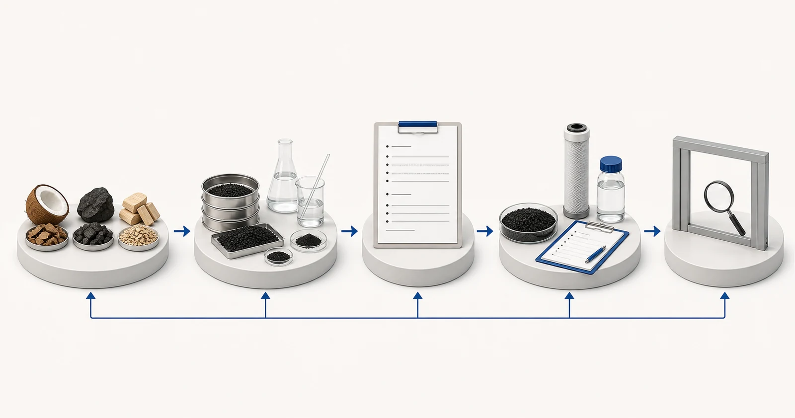

Direct answer
Activated-carbon specifications are comparison inputs, not a complete prediction of field performance. Coconut shell, coal and wood can produce different pore structures after activation, but raw-material names alone do not determine suitability. Iodine number is a characterization value and should not be presented as universal contaminant capacity. Mesh describes particle-size distribution; ash, moisture and hardness address other material properties. Acid washing or other post-treatment must be defined by a supplied specification and evidence. A responsible review links the lot specification to a target compound, water chemistry, contact conditions, construction and quality-control plan before making a recommendation.
Start with the buyer's problem
Procurement sheets often place one headline value next to a carbon source and invite a simple ranking. That shortcut can create two errors: it may reject a suitable material because a single value is lower, or approve an unsuitable material because the value is higher. Adsorption depends on the relationship between the target molecule, pore distribution, surface chemistry, competing matter and operating conditions. The certificate of analysis describes selected properties of a sample or lot; it does not simulate the complete treatment system.
The buyer should also distinguish bulk media data from finished-cartridge evidence. A carbon block includes carbon, binder and a manufacturing structure. A granular cartridge includes screens, pads, shell materials and flow distribution. Even when the same carbon grade is used, the finished product can create different contact and pressure behavior. Specifications therefore need traceability from approved media to finished construction and, where relevant, to a contaminant-specific test.
What report and operating data are required
Send the treatment target and water report together with the proposed specification. The review should identify which values are procurement controls, which are process inputs and which require a separate finished-product test.
- carbon raw material and activation or post-treatment description
- iodine number with test method and reporting basis
- particle-size or mesh distribution and allowed undersize or oversize
- ash, moisture and hardness with test methods
- acid-washed status or other chemical treatment and its acceptance criterion
- apparent density and packaging basis where vessel loading is planned
- target contaminant, competing water constituents and operating conditions
- lot traceability, sampling frequency and certificate-of-analysis requirements
A report should be recent enough to represent the proposed source and should identify the sample date and location. If the water changes by season, production batch or operating state, provide the range rather than one convenient result. State the required treated-water objective separately from the current analysis. When a value is unknown, mark it as unknown; a visible gap is safer than a guessed number.
Hydraulic information belongs beside chemistry. Average flow alone can hide short peak conditions, intermittent duty and long stagnation. Confirm daily runtime, peak demand, available pressure, allowable pressure loss, equipment dimensions and who will monitor and replace the carbon. These details decide whether an otherwise plausible media can be used in a serviceable system.
Selection logic
Begin with the function of each value. Particle size influences hydraulic behavior and available external area, while excessive fines can affect handling and downstream equipment. Hardness can be relevant to attrition during transport, loading or backwash. Moisture affects as-received mass calculations. Ash describes non-carbon residue under the stated method. These parameters may support quality control, but each must be interpreted with its method and acceptance range.
Treat iodine number as one material-characterization result, not a direct promise for chlorine, PFAS, VOCs, color or another treatment target. Two carbons with similar iodine values may behave differently for a particular compound because pore distribution and surface properties differ. Conversely, a difference in iodine number does not by itself quantify the difference in service life. Contaminant-specific evidence and project conditions remain necessary.
Raw material should guide questions rather than end the selection. Coconut-shell, coal-based and wood-based carbons are produced from different precursors and may be selected for different pore or handling objectives, yet manufacturing and activation choices matter. Ask for the current supplier specification, the test methods, lot certificate and change-control practice. If the media will support a certified finished product, confirm that substitutions are controlled by the applicable listing and certification rules.

- Raw-material source
- Measured lot specifications
- Methods and sample traceability
- Project report and operating basis
- Technical review
Conceptual illustration. Not test results, product certification or an engineering drawing.
Pretreatment, equipment and operating context
For vessels, specifications must connect to loading mass, bed volume, hydraulic expansion, screen retention, backwash and fines management. For cartridges, confirm whether the value describes loose media before manufacture or the finished item. A block cartridge cannot be characterized fully by a bulk-carbon certificate, and an inline granular unit still needs construction, dimension and pressure checks.
Incoming inspection should use agreed sampling and methods. Supplier and buyer results can differ if moisture basis, sample preparation or method versions are not aligned. The quotation and approval record should therefore cite the specification version and define how out-of-range lots are handled. Yuchen Water can support this documentation and the matching of approved materials to cartridges or equipment.
Common mistakes
- Ranking every carbon application by iodine number
- Publishing a raw-material name as a contaminant-removal claim
- Comparing values produced by different methods without qualification
- Applying a bulk-media certificate to every finished cartridge construction
- Ignoring lot traceability and specification revision control
Evidence and service boundary
A certificate of analysis should be presented as lot or sample evidence. It must not be rewritten as a guarantee of service life, system capacity or outlet concentration. Where Yuchen Water publishes selected test data, the page should identify the tested sample and conditions and invite the buyer to request the matching evidence rather than imply that all products share the result.
Material supply can include a reviewed specification, available test documents and equipment-matching support. Acceptance values, test frequency and finished-product claims must be agreed for the actual order. If a required claim is not supported by current evidence, the correct result of the review is an evidence gap or a proposed test, not a marketing assumption.
Yuchen Water reviews the target and evidence first, then identifies the appropriate carbon format and material questions, supporting pretreatment and equipment needs, and the documents or tests still required. The output can be a preliminary direction, a request for missing information, or a supportable material and equipment recommendation. A recommendation is not released simply because a buyer supplied a product name.
After supply, technical support can cover document confirmation, installation and flushing questions, remote commissioning guidance, monitoring points and replacement planning within the agreed scope. Actual performance still depends on the approved material, complete equipment, source water, installation, operation and maintenance. Published guidance cannot replace the project review.
No final material, capacity, service life, removal percentage or project result is promised before the report, construction, evidence and operating conditions are reviewed.
Official technical sources
These sources explain treatment principles or certification boundaries. They do not certify Yuchen Water products and do not replace project-specific evidence.
Related activated-carbon guidance
Continue through the knowledge cluster, review selected sample evidence only within its stated limits, compare product formats, or submit the report for a technical review.